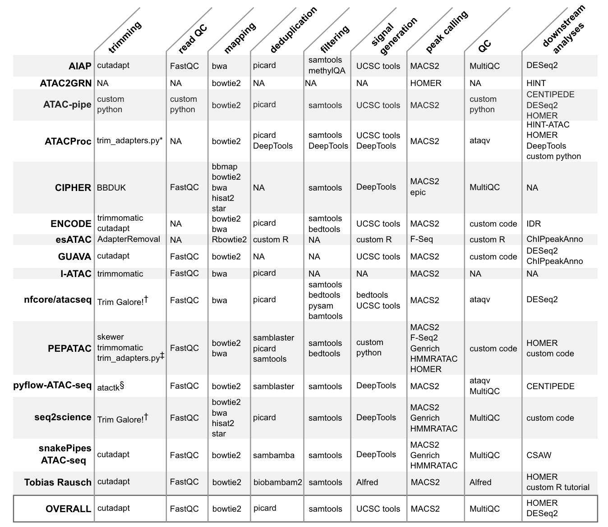
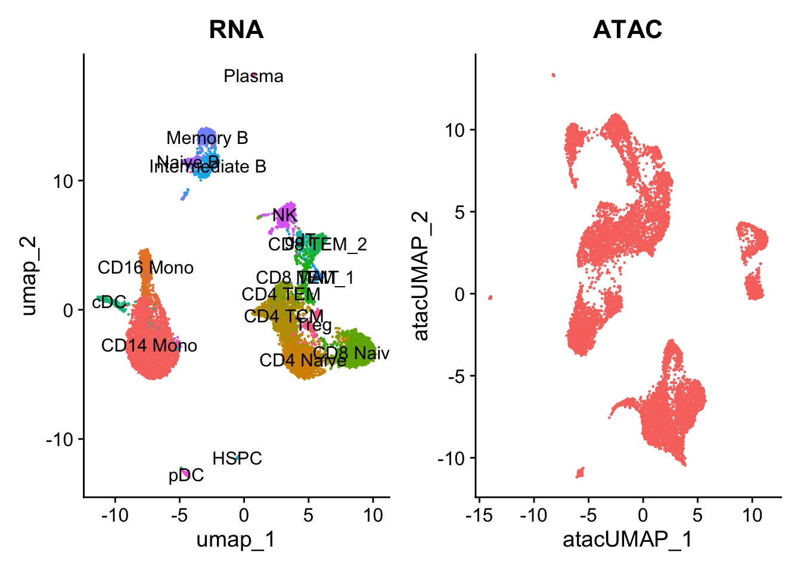
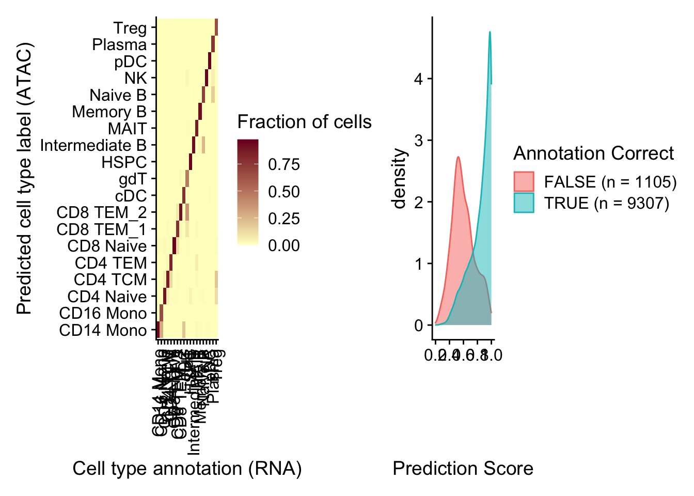
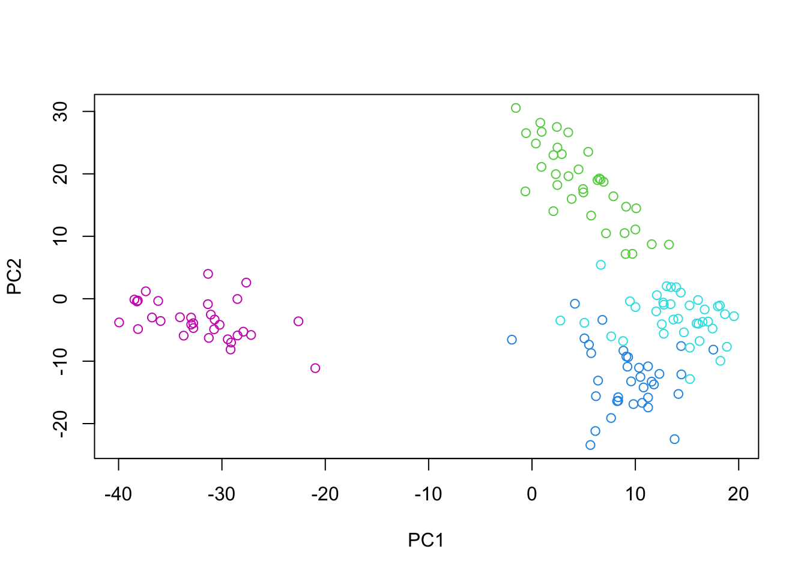
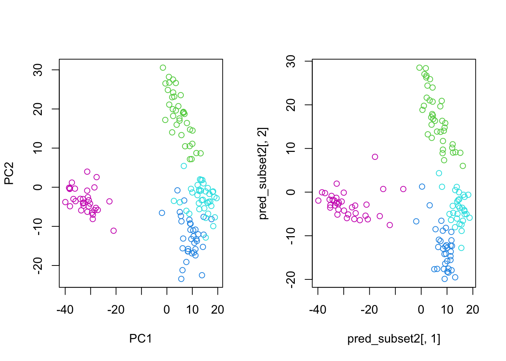

21.1.2 Primary data processing

Analyzing open chromatin regions has been a crucial aspect of understanding gene regulation and cellular identity. Over the years, several techniques have been developed to identify and study these accessible regions of the genome. One of the earliest methods was DNase-seq, which uses the DNase I enzyme to digest exposed DNA, followed by sequencing of the resulting fragments. This method, introduced in the late 1970s and adapted for high-throughput sequencing in 2006, provided valuable insights into the locations of regulatory elements and transcription factor binding sites. Another technique, called FAIRE-seq (Formaldehyde-Assisted Isolation of Regulatory Elements), was developed in 2007. This method relies on the differential crosslinking of proteins to DNA in open and closed chromatin regions, followed by sequencing of the isolated DNA fragments. FAIRE-seq offered a complementary approach to DNase-seq for identifying open chromatin regions. In 2013, a groundbreaking method called ATAC-seq (Assay for Transposase-Accessible Chromatin using sequencing) was introduced by Buenrostro et al. This technique revolutionized the study of open chromatin by providing a simple, fast, and sensitive approach. ATAC-seq employs a hyperactive Tn5 transposase that simultaneously cuts and inserts adapters into accessible DNA regions. The resulting fragments are then sequenced, revealing the locations of open chromatin. ATAC-seq offers several advantages over previous methods. It requires a small number of cells (as few as 500), making it suitable for studying rare cell types or precious samples. Additionally, the protocol is relatively simple and can be completed in a few hours, compared to the multiple days required for DNase-seq or FAIRE-seq. The high resolution and sensitivity of ATAC-seq have made it a widely adopted technique in the field of epigenomics. The introduction of single-cell ATAC-seq (scATAC-seq) in 2015 further expanded the capabilities of this method. By combining ATAC-seq with microfluidic technologies or combinatorial indexing, researchers can now profile open chromatin landscapes at the single-cell level. This advancement allows for the exploration of cellular heterogeneity, the identification of rare cell types, and the study of dynamic changes in chromatin accessibility during processes like differentiation or disease progression.

1. Nuclei Isolation and Tn5 Transposition (Figure 21.1 (a))
Nuclei Isolation: The first step involves isolating nuclei from cells while keeping the chromatin intact. This ensures that the native chromatin structure is preserved.
Exposure to Tn5 Transposase: The isolated nuclei are then exposed to Tn5 transposase. The Tn5 enzyme is a hyperactive transposase that simultaneously cuts DNA and inserts sequencing adapters into accessible chromatin regions. This step is crucial as it tags open chromatin areas with sequencing adapters, making them ready for subsequent amplification and sequencing.
Fragment Isolation and Amplification: After transposition, the resulting DNA fragments are isolated. These fragments are then amplified to create a library of transposed sequences. This library represents the accessible regions of the genome and is ready for sequencing.
Sequencing and Identification: The amplified DNA fragments are sequenced using high-throughput sequencing technologies. The resulting sequences are mapped to the reference genome to identify accessible chromatin regions, known as ATAC-seq peaks. These peaks indicate regions where the chromatin is open and potentially active in gene regulation.
2. Detailed Mechanism of Tn5 Transposition (Figure 21.1 (b))
Transposition into Native Chromatin: The Tn5 transposase inserts sequencing adapters into accessible regions of the chromatin. This insertion creates post-transposition DNA fragments, which include the Tn5-induced nick.
Initial Extension and Amplification: Following transposition, the DNA fragments undergo an initial extension at 72°C. This is followed by amplification, during which barcodes and additional adapter components are added. These steps are essential for the preparation of the final ATAC-seq library.
Purification and Library Construction: The amplified fragments are purified to construct the final ATAC-seq library. The sites of chromatin accessibility are defined by the Tn5 insertion, which is marked by specific adapter sequences.
3. Data Analysis and Interpretation (Figure 21.1 (c))
ATAC-seq Signal and Peaks: The sequenced data is analyzed to generate an ATAC-seq signal, which shows the read density across the genome. Peaks in the ATAC-seq signal correspond to regions of open chromatin. The example in the figure shows differential chromatin accessibility between two cell types (Cell type X and Cell type Y). Each cell type exhibits unique peaks, indicating distinct regulatory regions.
Transcription Factor Binding and Gene Expression: The open chromatin regions often contain binding sites for transcription factors (TFs). For instance, the motif for a specific TF (TF B) can be identified within a peak. Binding of TF B to its motif within an enhancer or promoter region can regulate the expression of a nearby gene (Gene A). The figure illustrates how the binding of TF B to its motif leads to gene A expression in one cell type but not in another, highlighting the functional impact of chromatin accessibility on gene regulation.
In addition to basic read counts and variant quality scores, there are a number of metrics that are valuable for ATAC-seq (or other regional enrichment experiemnts, like ChIP-seq). Figure Figure 21.3 shows example plots from the pepatac workflow.
Single-cell transcriptomics has revolutionized our ability to characterize cell states, but a deeper biological understanding requires more than just clustering cells. As new methods emerge to measure different cellular modalities, integrating these datasets becomes a key challenge in better understanding cellular identity and function. For instance, when performing scRNA-seq and scATAC-seq experiments on the same biological system, consistently annotating both datasets with the same cell type labels can be difficult due to the sparsity of scATAC-seq data and the lack of interpretable gene markers in scRNA-seq data.
In a 2019 paper by Stuart, Butler, and colleagues, methods were introduced to integrate scRNA-seq and scATAC-seq datasets from the same biological system. This vignette demonstrates these methods, including:
Using an annotated scRNA-seq dataset to label cells from an scATAC-seq experiment Co-visualizing and co-embedding cells from scRNA-seq and scATAC-seq Projecting scATAC-seq cells onto a UMAP derived from an scRNA-seq experiment
The Signac package, recently developed for analyzing single-cell resolution chromatin datasets like scATAC-seq, is extensively used in this vignette.
The methods are demonstrated using a publicly available ~12,000 human PBMC ‘multiome’ dataset from 10x Genomics, where scRNA-seq and scATAC-seq profiles were simultaneously collected from the same cells. For the purpose of this vignette, the datasets are treated as if they originated from two different experiments and are integrated together. Since they were originally measured in the same cells, this provides a ground truth for assessing the accuracy of the integration. It is emphasized that the use of the multiome dataset here is for demonstration and evaluation purposes, and users should apply these methods to separately collected scRNA-seq and scATAC-seq datasets.
BiocManager::install('satijalab/seurat-data')The following code loads pre-packaged data from the PBMC Multiome dataset from 10x Genomics.
library(SeuratData)
# install the dataset and load requirements
InstallData("pbmcMultiome")We’ll be using some additional packages. If you get errors here that a package is not available, you can use BiocManager::install to install the missing package and then rerun this step.
Here, we just load the pre-compiled data. However, if you have your own data, you’d load these data using special data importers or by reading the parts of your data separately.
(These next details are taken directly from the Seurat vignette, so I’m going to just blindly follow them.)
This section just follows the Seurat RNA-seq pipeline. At a high level, the steps include:
Normalization: This line normalizes the RNA data. Normalization typically adjusts the expression measurements to account for differences in sequencing depth or other technical variations across cells. In Seurat, the NormalizeData function scales the gene expression measurements for each cell by the total expression, multiplies by a scaling factor (default is 10,000), and log-transforms the result.
Finding Variable Features: This step identifies the genes that show high variability across cells. These highly variable genes are more likely to capture the biological differences between cells. The FindVariableFeatures function selects these genes for downstream analysis.
Scaling the Data: This line scales the data to have a mean of zero and a variance of one. This standardization step is important for downstream dimensionality reduction techniques like PCA (Principal Component Analysis). The ScaleData function centers and scales the data.
Running Principal Component Analysis (PCA): PCA is a dimensionality reduction technique that reduces the data to a set of principal components (PCs). These PCs capture the most significant sources of variation in the data. The RunPCA function in Seurat performs PCA and stores the results in the object.
Running Uniform Manifold Approximation and Projection (UMAP): UMAP is another dimensionality reduction technique that is often used for visualization of high-dimensional data. It captures the local and global structure of the data more effectively than PCA for certain types of data. The RunUMAP function runs UMAP on the RNA data, using the first 30 principal components (as specified by dims = 1:30).
# Perform standard analysis of each modality independently RNA analysis
pbmc.rna <- NormalizeData(pbmc.rna)
pbmc.rna <- FindVariableFeatures(pbmc.rna)
pbmc.rna <- ScaleData(pbmc.rna)
pbmc.rna <- RunPCA(pbmc.rna)
pbmc.rna <- RunUMAP(pbmc.rna, dims = 1:30)# ATAC analysis add gene annotation information
annotations <- GetGRangesFromEnsDb(ensdb = EnsDb.Hsapiens.v86)
seqlevelsStyle(annotations) <- "UCSC"
genome(annotations) <- "hg38"
Annotation(pbmc.atac) <- annotationsAnd take a look at what we added:
head(Annotation(pbmc.atac))GRanges object with 6 ranges and 5 metadata columns:
seqnames ranges strand | tx_id gene_name
<Rle> <IRanges> <Rle> | <character> <character>
ENSE00001489430 chrX 276322-276394 + | ENST00000399012 PLCXD1
ENSE00001536003 chrX 276324-276394 + | ENST00000484611 PLCXD1
ENSE00002160563 chrX 276353-276394 + | ENST00000430923 PLCXD1
ENSE00001750899 chrX 281055-281121 + | ENST00000445062 PLCXD1
ENSE00001489388 chrX 281192-281684 + | ENST00000381657 PLCXD1
ENSE00001719251 chrX 281194-281256 + | ENST00000429181 PLCXD1
gene_id gene_biotype type
<character> <character> <factor>
ENSE00001489430 ENSG00000182378 protein_coding exon
ENSE00001536003 ENSG00000182378 protein_coding exon
ENSE00002160563 ENSG00000182378 protein_coding exon
ENSE00001750899 ENSG00000182378 protein_coding exon
ENSE00001489388 ENSG00000182378 protein_coding exon
ENSE00001719251 ENSG00000182378 protein_coding exon
-------
seqinfo: 25 sequences (1 circular) from hg38 genomeThe process described below for dimensionality reduction combining Term Frequency-Inverse Document Frequency (TFIDF) and Singular Value Decomposition (SVD) is called Latent Semantic Indexing (LSI) and was first described here. Suffice it so say that since our ATAC-seq data are very “sparse
# We exclude the first dimension as this is typically correlated with sequencing depth
pbmc.atac <- RunTFIDF(pbmc.atac)
pbmc.atac <- FindTopFeatures(pbmc.atac, min.cutoff = "q0")
pbmc.atac <- RunSVD(pbmc.atac)
pbmc.atac <- RunUMAP(pbmc.atac, reduction = "lsi", dims = 2:30, reduction.name = "umap.atac", reduction.key = "atacUMAP_")Now, plot the results.
p1 <- DimPlot(pbmc.rna, group.by = "seurat_annotations", label = TRUE) + NoLegend() + ggtitle("RNA")
p2 <- DimPlot(pbmc.atac, group.by = "orig.ident", label = FALSE) + NoLegend() + ggtitle("ATAC")
p1 + p2
The UMAP visualization reveals the presence of multiple cell groups in human blood. If you are familiar with scRNA-seq analyses of PBMC, you may recognize the presence of certain myeloid and lymphoid populations in the scATAC-seq data. However, annotating and interpreting clusters is more challenging in scATAC-seq data as much less is known about the functional roles of noncoding genomic regions than is known about protein coding regions (genes).
We can try to quantify the activity of each gene in the genome by assessing the chromatin accessibility associated with the gene, and create a new gene activity assay derived from the scATAC-seq data. Here we will use a simple approach of summing the fragments intersecting the gene body and promoter region (we also recommend exploring the Cicero tool, which can accomplish a similar goal, and we provide a vignette showing how to run Cicero within a Signac workflow here).
To create a gene activity matrix, we extract gene coordinates and extend them to include the 2 kb upstream region (as promoter accessibility is often correlated with gene expression). We then count the number of fragments for each cell that map to each of these regions, using the using the FeatureMatrix() function. These steps are automatically performed by the GeneActivity() function:
# quantify gene activity
gene.activities <- GeneActivity(pbmc.atac, features = VariableFeatures(pbmc.rna))
# add gene activities as a new assay
pbmc.atac[["ACTIVITY"]] <- CreateAssayObject(counts = gene.activities)# normalize gene activities
DefaultAssay(pbmc.atac) <- "ACTIVITY"
pbmc.atac <- NormalizeData(pbmc.atac)
pbmc.atac <- ScaleData(pbmc.atac, features = rownames(pbmc.atac))
To map cell identities from RNA-seq to ATAC-seq, we follow the steps outlined in the paper by Stuart et al.
In Figure 21.4, (A) Representation of two datasets, reference and query, each of which originates from a separate single-cell experiment. The two datasets share cells from similar biological states, but the query dataset contains a unique population (in black). (B) We perform canonical correlation analysis, followed by L2 normalization of the canonical correlation vectors, to project the datasets into a subspace defined by shared correlation structure across datasets. (C) In the shared space, we identify pairs of MNNs across reference and query cells. These should represent cells in a shared biological state across datasets (gray lines) and serve as anchors to guide dataset integration. In principle, cells in unique populations should not participate in anchors, but in practice, we observe “incorrect” anchors at low frequency (red lines). (D) For each anchor pair, we assign a score based on the consistency of anchors across the neighborhood structure of each dataset. (E) We utilize anchors and their scores to compute “correction” vectors for each query cell, transforming its expression so it can be jointly analyzed as part of an integrated reference.
# Identify anchors
transfer.anchors <- FindTransferAnchors(reference = pbmc.rna, query = pbmc.atac, features = VariableFeatures(object = pbmc.rna),
reference.assay = "RNA", query.assay = "ACTIVITY", reduction = "cca")After identifying anchors, we can transfer annotations from the scRNA-seq dataset onto the scATAC-seq cells. The annotations are stored in the seurat_annotations field, and are provided as input to the refdata parameter. The output will contain a matrix with predictions and confidence scores for each ATAC-seq cell.
celltype.predictions <- TransferData(anchorset = transfer.anchors, refdata = pbmc.rna$seurat_annotations,
weight.reduction = pbmc.atac[["lsi"]], dims = 2:30)
pbmc.atac <- AddMetaData(pbmc.atac, metadata = celltype.predictions)After performing transfer, the ATAC-seq cells have predicted annotations (transferred from the scRNA-seq dataset) stored in the predicted.id field. Since these cells were measured with the multiome kit, we also have a ground-truth annotation that can be used for evaluation. You can see that the predicted and actual annotations are extremely similar.
pbmc.atac$annotation_correct <- pbmc.atac$predicted.id == pbmc.atac$seurat_annotations
p1 <- DimPlot(pbmc.atac, group.by = "predicted.id", label = TRUE) + NoLegend() + ggtitle("Predicted annotation")
p2 <- DimPlot(pbmc.atac, group.by = "seurat_annotations", label = TRUE) + NoLegend() + ggtitle("Ground-truth annotation")
p1 | p2
In this example, the annotation for an scATAC-seq profile is correctly predicted via scRNA-seq integration ~90% of the time. In addition, the prediction.score.max field quantifies the uncertainty associated with our predicted annotations. We can see that cells that are correctly annotated are typically associated with high prediction scores (>90%), while cells that are incorrectly annotated are associated with sharply lower prediction scores (<50%). Incorrect assignments also tend to reflect closely related cell types (i.e. Intermediate vs. Naive B cells).
predictions <- table(pbmc.atac$seurat_annotations, pbmc.atac$predicted.id)
predictions <- predictions/rowSums(predictions) # normalize for number of cells in each cell type
predictions <- as.data.frame(predictions)
p1 <- ggplot(predictions, aes(Var1, Var2, fill = Freq)) + geom_tile() + scale_fill_gradient(name = "Fraction of cells",
low = "#ffffc8", high = "#7d0025") + xlab("Cell type annotation (RNA)") + ylab("Predicted cell type label (ATAC)") +
theme_cowplot() + theme(axis.text.x = element_text(angle = 90, vjust = 0.5, hjust = 1))
correct <- length(which(pbmc.atac$seurat_annotations == pbmc.atac$predicted.id))
incorrect <- length(which(pbmc.atac$seurat_annotations != pbmc.atac$predicted.id))
data <- FetchData(pbmc.atac, vars = c("prediction.score.max", "annotation_correct"))
p2 <- ggplot(data, aes(prediction.score.max, fill = annotation_correct, colour = annotation_correct)) +
geom_density(alpha = 0.5) + theme_cowplot() + scale_fill_discrete(name = "Annotation Correct",
labels = c(paste0("FALSE (n = ", incorrect, ")"), paste0("TRUE (n = ", correct, ")"))) + scale_color_discrete(name = "Annotation Correct",
labels = c(paste0("FALSE (n = ", incorrect, ")"), paste0("TRUE (n = ", correct, ")"))) + xlab("Prediction Score")
p1 + p2
In this demonstration, we will explore the concept of transfer learning using Principal Component Analysis (PCA). Transfer learning allows us to leverage knowledge gained from one dataset and apply it to another related dataset. We will showcase this by dividing a dataset into two pieces and projecting the second dataset into the principal components derived from the first dataset.
First, let’s load the required libraries:
We will use the GEOquery package to retrieve a dataset from the Gene Expression Omnibus (GEO) database and convert it into a SummarizedExperiment object:
To focus on the most informative genes, we will select the top 250 most variable genes based on their standard deviation. Let’s denote the expression matrix as \(X\), where rows represent genes and columns represent samples.
We subset the SummarizedExperiment object to include only the selected genes:
se_subset <- se[variable_rows,]Now, we will split the dataset into two pieces, simulating the collection of two separate datasets with the same genes. This will allow us to demonstrate transfer learning. Let’s denote the subsets as \(X_1\) and \(X_2\).
We perform PCA on the first subset (\(X_1\)) to obtain the principal components. PCA seeks to find a set of orthogonal vectors (principal components) that capture the maximum variance in the data. The principal components are the eigenvectors of the covariance matrix of \(X_1\).
Let’s visualize the samples in the principal component space, colored by their cancer type:
plot(pc_subset1$x, col=as.numeric(as.factor(se_subset_1$cancer.type.ch1))+2)
Now, let’s use the PCA model trained on \(X_1\) to project the samples from \(X_2\) into the same principal component space. This is where transfer learning comes into play. We can represent the projection matrix as \(P\), which consists of the top principal components from \(X_1\).
Mathematically, the projection of \(X_2\) into the principal component space is given by:
\(X_2^{(p)} = X_2 \cdot P\)
where \(X_2^{(p)}\) represents the projected samples from \(X_2\) in the principal component space.
In PCA, the principal components represent a new coordinate system that is aligned with the directions of maximum variance in the data. The process of finding these principal components can be thought of as a rotation of the original coordinate system. Consider the original feature space, where each dimension corresponds to a variable (gene in our example). The data points (samples) are scattered in this high-dimensional space. PCA identifies the directions in which the data varies the most, and these directions become the principal components. Geometrically, the principal components form a new orthogonal coordinate system. The first principal component (PC1) aligns with the direction of maximum variance, the second principal component (PC2) aligns with the direction of the second-highest variance (orthogonal to PC1), and so on. When we perform PCA on the first subset (\(X_1\)), we obtain the principal components \(P\). These principal components define the rotation matrix that transforms the original coordinate system to the new PCA coordinate system. Now, let’s consider the “predict” process, where we project the samples from the second subset (\(X_2\)) into the principal component space derived from \(X_1\). Geometrically, this can be understood as follows:
The samples from \(X_2\) are originally represented in the same high-dimensional feature space as \(X_1\). By using the “predict” function with the PCA model trained on \(X_1\), we are essentially applying the rotation matrix \(P\) to the samples from \(X_2\). The rotation matrix \(P\) transforms the coordinates of the samples from \(X_2\) into the new PCA coordinate system defined by the principal components of \(X_1\). In the PCA coordinate system, the samples from \(X_2\) are represented by their projections onto the principal components.
Mathematically, the projection of \(X_2\) onto the principal component space is given by: \(X_2^{(p)} = X_2 \cdot P\) where \(X_2^{(p)}\) represents the projected samples from \(X_2\) in the principal component space. Geometrically, this projection can be visualized as follows:
Each sample from \(X_2\) is represented as a point in the original high-dimensional feature space. The rotation matrix \(P\) defines the new PCA coordinate system, where the axes are the principal components. The “predict” process maps each sample from \(X_2\) onto the new PCA coordinate system by applying the rotation defined by \(P\). The projected samples \(X_2^{(p)}\) represent the coordinates of the samples from \(X_2\) in the PCA coordinate system.
By projecting the samples from \(X_2\) into the PCA space derived from \(X_1\), we can analyze how well the structure and variability of \(X_2\) align with the principal components learned from \(X_1\). If the projected samples from \(X_2\) exhibit similar patterns or groupings as the samples from \(X_1\) in the PCA space, it indicates that the knowledge learned from \(X_1\) effectively captures the underlying structure of \(X_2\).
The “predict” process in PCA can be understood as a rotation of the original coordinate system to align with the directions of maximum variance, followed by a projection of new samples onto the rotated coordinate system defined by the principal components.
Finally, we can compare the distribution of samples from both subsets in the principal component space:
par(mfrow=c(1,2))
plot(pc_subset1$x, col=as.numeric(as.factor(se_subset_1$cancer.type.ch1))+2)
plot(pred_subset2[,1], pred_subset2[,2], col=as.numeric(as.factor(se_subset_2$cancer.type.ch1))+2)
By projecting the samples from \(X_2\) into the principal component space derived from \(X_1\), we can observe how well the learned principal components capture the structure and variability of the second dataset. This demonstrates the power of transfer learning, where knowledge gained from one dataset can be effectively applied to another related dataset.
Mathematically, transfer learning with PCA can be summarized as follows:
Transfer learning with PCA allows us to leverage the learned principal components from one dataset to analyze and understand another related dataset, even when the datasets are collected separately. This technique can be particularly useful when dealing with limited sample sizes or when trying to integrate information from multiple sources.